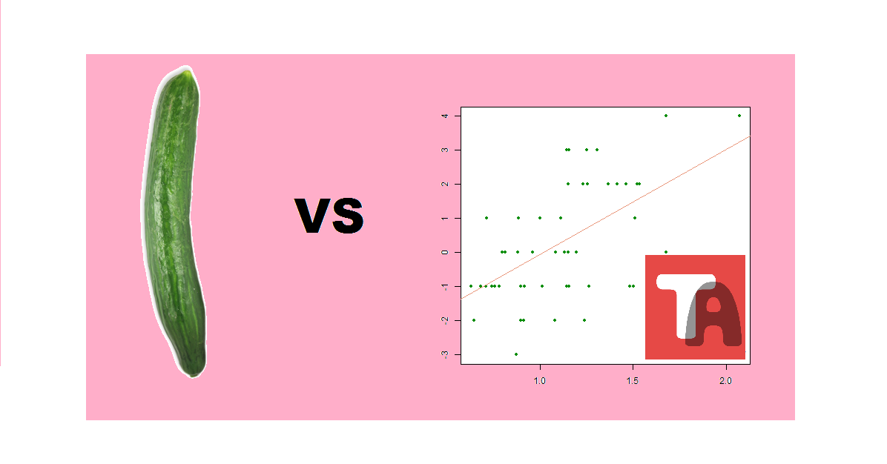

Jalkapallon EM-kisojen otteluiden tuloksia ovat tilastotieteilijöiden ja urheilutoimittajien lisäksi ennustaneet muun muassa mustekala, simpanssi ja papukaija. Vuoden 2016 kunniakkaaseen näkijöiden ammattikuntaan liittyi myös eräs Cucumis-suvun yksivuotinen ruohovartinen vihanneskasvi: suomalainen ennustajakurkku. Kurkku mallintaa pelaavien joukkueiden voittotodennäköisyyksiä pyörähtämällä akselinsa ympäri ja osoittaen punnituslapun merkitsemällä päällään kohti valitsemaansa joukkuetta. Ennustajakurkun mukaisia voimasuhteita voi seurata vihanneksen Facebook-sivulla.
Tyyppiarvo julkaisi oman käsityksensä alkulohkojen kulusta kisojen alkaessa Ranskassa viime perjantaina ja ottelukohtaisia voimasuhteita voi seurata reaaliaikaisesti Tyyppiarvon Twitter-tilillä ennen otteluiden alkua. Rautaiseen matemaattisen osaamiseen perustuva malli on tähän mennessä pärjännyt melkoisen hyvin, mutta mallin todellisen ennustusvoiman määrittäminen on vielä edessä. Päätimmekin verrata ennusteidemme tehoa ennustajakurkkua vastaan. Korvaako vihannes tilastotieteilijän tulevaisuudessa?
Käytimme aineistona keskiviikkoon 15.6. mennessä pelattujen otteluiden tuloksia. Ennustajakurkun ja Tyyppiarvon vinkit jo pelattuihin otteluihin olivat (ottelun voittaja boldattu, tasatilanteessa molemmat):
| Peli | Ennustajakurkku | Tyyppiarvo |
|---|---|---|
| Albania - Sveitsi | Sveitsi | Sveitsi |
| Wales - Slovakia | Wales | Slovakia |
| Englanti - Venäjä | Venäjä | Englanti |
| Turkki - Kroatia | Kroatia | Kroatia |
| Puola - Pohjois-Irlanti | Puola | Puola |
| Saksa - Ukraina | Tasapeli | Saksa |
| Espanja - Tsekki | Espanja | Espanja |
| Irlanti - Ruotsi | Irlanti | Ruotsi |
| Belgia - Italia | Belgia | Belgia |
| Itävalta - Unkari | Unkari | Itävalta |
| Portugali - Islanti | Portugali | Portugali |
Keskiviikkoaamuun mennessä pelattujen pelien perusteella johtaa ennustajakurkku tilastotiedettä yhden ottelun erolla.
- Kurkku on kieltämättä kova vastus, kommentoi Tyyppiarvon jalkapalloennusteista vastaava Tuomo Nieminen. Käyryys saattaa antaa kurkulle edun perinteisiin lineaarisiin malleihin verrattuna, joihin Tyyppiarvonkin ennuste perustuu, Nieminen pohtii.
Peli ei kuitenkaan ole vielä pelattu ja jäämme seuraamaan tilannetta. Saako kurkku tulevien kolmen viikon aikana Tyyppiarvon urheilutoimituksesta varteenotettavan haastajan, vai voidaan jalkapallodatan parissa puurtavat analyytikot korvata kotimaisella maataloustuotteella?